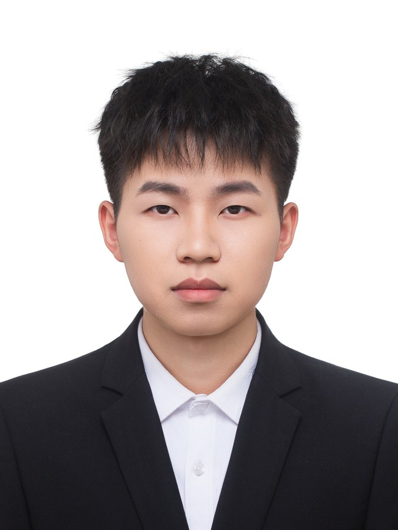

2026.09 — 2029.06 在读
中国科学技术大学
信息科学技术学院 · 电子工程与信息科学系 · 硕士研究生（电子与通信工程）
方向：多模态学习、多智能体系统、OPD、强化学习与智能信息处理。

我是吴贤，现为中国科学技术大学电子与通信工程硕士研究生，研究兴趣为多模态学习、多智能体系统与强化学习。
我关注视觉、语言与智能体决策之间的连接：复杂场景理解、多智能体在开放环境中的协同推理与学习，以及可靠感知能力在真实系统中的落地。本科期间围绕信号处理、深度学习与图像分析，独立完成了医学图像分割、人脸识别等项目。
面向视网膜 OCT 积液病灶分割，以 U-Net 为基线对比 U-Net / Attention U-Net，完成预处理、训练、Dice / IoU 评估与 Tkinter 推理可视化。
代码：OCT-Retinal-Fluid-Segmentation →
C/S 架构，PyQt5 + OpenCV + Socket + openGauss，复现 EigenFace 与 CosFace-LMCL。
LFW 准确率 95.70%Python / C / PyTorch / OpenCV / MATLAB / Linux · 深度学习 / 计算机视觉 / 多模态 / 多智能体 / 强化学习 / 医学影像分析